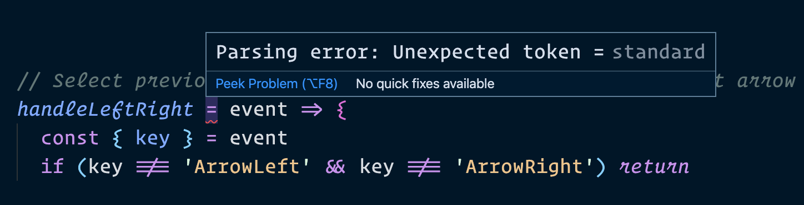

Let’s start by copying all the code we have into a tabby.js file.
// tabby.js
// Copy-paste all the code we wrote here
We will then import tabby.js into main.js.
<script type="module" src="js/main.js"></script>
import './tabby.js'
Tabby should still work at this point, but we still have more work to do.
Resolving button inconsistencies
This is optional: But we can choose to move the part about button inconsistency back to main.js. We can do this because it’s not strictly a part of Tabby. It’s more of a global fix.
// Resolve browser inconsistencies when clicking on buttons
document.addEventListener('click', event => {
if (event.target.matches('button')) {
event.target.focus()
}
})
Whether you move it is a personal choice though.
In my case, I chose to move the code back into main.js.
Creating multiple instances
Right now, our code supports only one instance of Tabby. We only support one instance because we used querySelector instead of querySelectorAll.
// This finds one `.tabby` only.
const tabby = document.querySelector('.tabby')
If we want to support multiple Tabby instances, we need to select multiple tabby instances with querySelectorAll.
// tabby.js
const tabbies = [...document.querySelectorAll('.tabby')]
tabbies.forEach(tabby => {
const tabsList = tabby.querySelector('[role="tablist"]')
const tabs = [...tabby.querySelectorAll('[role="tab"]')]
const tabPanels = [...tabby.querySelectorAll('[role="tabpanel"]')]
// All functions here
// All event listeners here
})
If there are no Tabby instances present on the page, we don’t need to execute any code. We can check if Tabby instances exists with an if statement.
We need to use tabby, tabsList, tabs, and tabPanels variables inside methods to switch tabs later, so we’ll save these variables as properties for easy access.
Clicking on a tab should select the tab and show the correct tabPanel now.
The second event listener
The second event listener selects the previous when the user presses left arrow key. It selects the next tab when the user press the right arrow key.
Here’s the code we wrote so far.
// Select previous or next tab when user press Left or Right arrow keys
tabsList.addEventListener('keydown', event => {
const { key } = event
if (key !== 'ArrowLeft' && key !== 'ArrowRight') return
const index = tabs.findIndex(t => t.getAttribute('aria-selected') === 'true')
let targetTab
if (key === 'ArrowLeft') targetTab = getPreviousTab(index)
if (key === 'ArrowRight') targetTab = getNextTab(index)
if (targetTab) {
event.preventDefault()
targetTab.click()
}
})
We can copy this event listener into Tabby's constructor function as well.
export default class Tabby {
constructor (tabby) {
// ...
tabsList.addEventListener('keydown', event => {
const { key } = event
if (key !== 'ArrowLeft' && key !== 'ArrowRight') return
const index = tabs.findIndex(t => t.getAttribute('aria-selected') === 'true')
let targetTab
if (key === 'ArrowLeft') targetTab = getPreviousTab(index)
if (key === 'ArrowRight') targetTab = getNextTab(index)
if (targetTab) {
event.preventDefault()
targetTab.click()
}
})
}
}
This event listener requires getPreviousTab and getNextTab to work. We can create these methods in Tabby.
Both getPreviousTab and getNextTab needs the tabs variable to work. We can access tabs via this since we saved a reference in the constructor function.
The code for the second event listener looks overwhelmingly complicated. If we put so much code into constructor, it’s hard to figure out what’s actually happening when a Tabby instance gets initiated.
A nicer way is to create a method to hold the event listener’s callback. We can call this method handleLeftRight.
We can then call handleLeftRight from the event listener.
export default class Tabby {
constructor (tabby) {
// ...
tabsList.addEventListener('keydown', event => {
this.handleLeftRight(event)
})
}
handleLeftRight (event) {
// Code from the event listener
}
}
This makes the code MUCH nicer. But we can still improve it.
One way to improve the code is to use bind. We can pass the this value via bind so this is still correct inside handleLeftRight.
export default class Tabby {
constructor (tabby) {
// ...
tabsList.addEventListener('keydown', this.handleLeftRight.bind(this))
}
handleLeftRight (event) {
// Code from the event listener
}
}
But bind doesn’t have a friendly syntax. It makes the code complicated beyond what is necessary.
A better way is to create event handlers with arrow functions. (Note: This only works with Classes or Constructor functions. Do not try to use it for Factory functions or OLOO!).
export default class Tabby {
constructor (tabby) {
// ...
tabsList.addEventListener('keydown', this.handleLeftRight)
}
handleLeftRight = (event) => {
// Code from the event listener
}
}
Much nicer, isn’t it?
If you use Standard linter, you’ll notice it complains about a syntax error.

But this isn’t an error. It’s valid ES6 syntax. Unfortunately, Standard doesn’t recognise it. If you wish to use Classes this way, the best option is to change your linter from Standard into ESLint. (Standard actually uses ESLint underneath the hood, if that gives you some comfort).
Clearing up code for the first event listener
We can use the same arrow-function process for the first event listener. This makes the code much nicer.
It’s relatively straightforward to make this work. You can use the same process we did with the two other event listeners above – so I’ll skip the steps and show you the completed code instead.
We mentioned it’s important to use private variables in the Object Oriented Programming section. But we aren’t using any private variables in this lesson. Why?
Yes, it’s true we can create private variables for tabby, tabsList, etc…